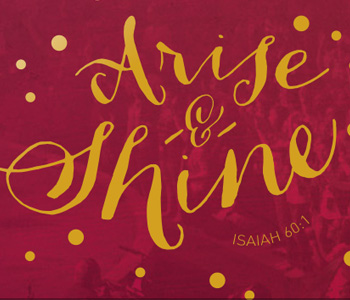

This project is fully-responsive and has a few fun elements:
SVG masking on the homepage text elements allows for a shining effect which responds to your mouse.
SVG logos lend themselves to easy adjustments on Retina displays.
Fun circles are randomly generated and animate when you hover over a biography thumbnail.
The main navigation moves out of your way as your scroll down the page, but appears again when you decide to scroll back up.
This project also harnesses the power of Grunt to orchestrate copiliation and optimization behind the scenes.